Sempre sulle pagine
algoritmi di paginazione locali o globali
- allocazione Locale
- ogni processo riceve una porzione fissa della memoria, quindi tutte le pagine sono attaccate
- più facile da implementare
- meno dinamica e meno inefficiente(si verifica troppo spesso il trashing)
- allocazione Globale
- ogni processo può distribuire dinamicamente le proprie pagine
- meno facile da implementare (si usa soprattutto in processi che evolvono nel tempo)
- più dinamica e più inefficiente(si verificano meno trashing ma non si azzerano)
- si possono usare dei bit di aging per ottimizzare le cose
cosa è il trashing?
si verifica quando il processore occupa più tempo a fare operazioni di paging piuttosto che eseguire i processi stessi
Esempio
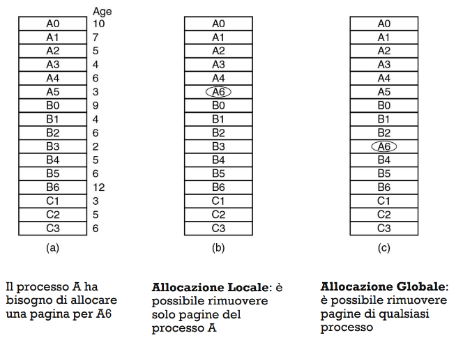
Gestione memoria dei processi proporzionale o equa
- Allocazione equa
- ad ogni processo assegno un quantitativo di frame prefissato
- problema: un processo può avere priorità diverse rispetto a un altro
- Allocazione proporzionale
- ad ogni processo assegno un quantitativo di frame proporzionale
- devo dare a un processo un limite minimo di pagine
- gestisco dinamicamente i frame aggiornando il loro quantitativo in base alle esigenze del processo
Come capire quanta memoria allocare a un processo?
Page Fault Frequency:
- se un processo causa molti page fault allora devo dargli tanta memoria sennò no
Trova un trade off del grafico tra una situazione in cui ho troppi page fault e troppi pochi quindi si tratta di una cosa dinamica 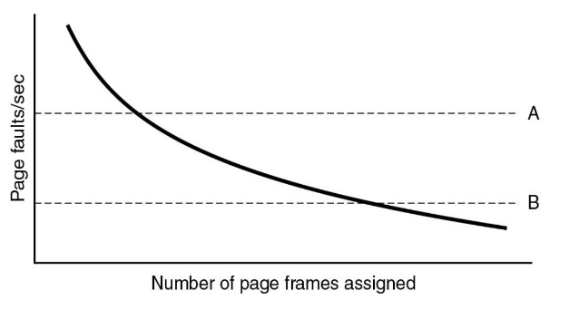
il discorso non è quale pagina togliere per metterne un'altra ma quante pagine aggiungere
tante volte conviene assegnare piu pagine per ridurre eventuali overhead causati dagli eccesivi swap
ci sono due modi per mitigare il problema del trashing
- Out of memory killer
- processo che seleziona o termina un processo se richiede troppa memoria o è poco importante
- swapping
- come abbiamo già visto con tutti quegli algoritmi
Come ridurre queste uccisioni dei processi
e se voglio evitare il trashing del mio processo
- scheduling a due livelli
- se ne ho uno in foreground(lo sto usando)
- metto tutti gli altri in memoria non volatile
- gestione della multiprogrammazione
- usa delle caratteristiche per spostare i processi come:
- se è I/O bound o CPU bound
- la dimensione e la frequenza di paginazione dei processi
- usa delle caratteristiche per spostare i processi come:
- altre tecniche
- oltre a uccidere o spostare potrei comprimere, compattare oppure deduplicare i processi
- per deduplicazione se ad esempio faccio il fork le istruzioni dei due processi saranno abbastanza identiche e quindi potrei farle puntare nelle stesse istruzioni
- oltre a uccidere o spostare potrei comprimere, compattare oppure deduplicare i processi
per gli algoritmi di aging è bene avere molte pagine libere così che facciamo in modo che le varie pagine invecchino adeguatamente
- utilizzo di un paging daemon
- demon processo in background che viene risvegliato in modo sincrono, ad esempio nelle mail abbiamo un processo che ad ogni ciclo di clock refresha il server e controlla se ci sono mail
- ogni tanto si risveglia e controlla come siamo messi in memoria e se stiamo messi bene sposta le pagine seguendo gli algoritmi visti in precedenza+
- Scrittura in memoria non volatile
- Quando modifico una pagina mi salvo in memoria non volatile quelle informazioni
- clock a due lancette
- una lancetta in senso anteriore ha un paging daemon che fa quello che deve fare
- la lancetta posteriore si ritroverà ora più pagine libere, eseguendo l’algoritmo di clock
Dimensione delle pagine e bilancio dei fattori
quale è la migliore pagina da avere a disposizione?
- avere pagine grandi è un problema per la scrittura e lettura
- avere pagine troppo piccole aumenta l’overhead e le tabelle delle pagine saranno enormi
si cerca un trade off tra le due cose, consentendo dimensioni di pagine variabili
- transparent huge pages, pagine estremamente grandi che occupano solo uno spazio nelle tabelle delle pagine
Calcolare dimensione ottimale delle pagine
Parametri considerati:
- Dimensione media del processo: byte
- Dimensione della pagina: byte
- Dimensione di ogni voce nella tabella: byte Per capire quante pagine servono per ogni processo faccio: Per capire quanto spazio occupa una voce nella tabella faccio: byte la frammentazione interna si calcola facendo
Calcolo effettivo
l’ottimo si trova bilanciando questi due fattori s* e/p$$+
per trovare il punto massimo di una funzione uso la derivata
per farla prendiamo che la nostra x è p ESCE: per essere ottimale la nostra 46:17
Problemi di progettazione
in passato alcuni sistemi avevano uno spazio di indirizzamento delle istruzioni separato da quello dei dati 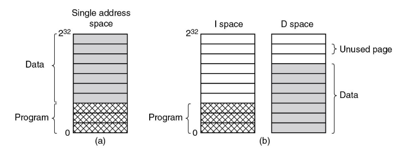
Condivisione delle pagine nei sistemi multiprogrammati
Esiste un concetto di riutilizzo delle stesse risorse: per facilitarlo conviene dividerlo come detto prima in I-space: Instruction space D-space: Data space
il processo usa dei puntatori per puntare a entrambe le cose e lo scheduler li sfrutta per impostare l'MMU
se elimino un processo devo stare attento che altri non dipendano da esso, potrebbero avvenire diversi page fault
-
Se esistono delle pagine in sola lettura posso riciclarle,— ad esempio
- librerie riutilizzate
- quando si fa il fork
-
se sono dei dati in scrittura di solito non si riciclano
- dipende tutto dall’utilizzo che se ne fa se entrambe condividono le stesse cose anche in scrittura. appena un processo inizia a scrivere qualcosa di diverso
- faccio avvenire una trap e copio la pagina che è stato modificato (copy on write)
- dipende tutto dall’utilizzo che se ne fa se entrambe condividono le stesse cose anche in scrittura. appena un processo inizia a scrivere qualcosa di diverso
DLL- Dynamic Link Libraries→ risparmio di spazio perché condivido librerie comuni
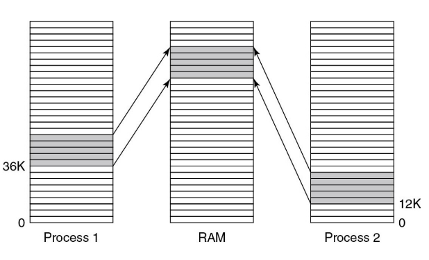
per utilizzare questi meccanismi abbiamo bisogno di indirizzi relativi e non assoluti
usare un file mappato in memoria (slide stand-by)
ho dei processi che aggiornano in memoria eventuali cose in tempo reale potrei usarlo per far comunicare processi
Problemi di implementazione della memoria virtuale
scenari che deve gestire il s.o. per quanto riguarda la memoria virtuale abbiamo:
Creazione di un processo:
- capire quanto è grande il processo
- creare la tabella delle pagine
- Dedicare uno spazio nella memoria non volatile allocando uno spazio per lo swapping
- inizializzare l’area di scambio e registrare informazioni nella tabella dei processi
Esecuzione di un processo(quando lo decide lo scheduler):
- eventualmente azzero TLB e MMU
- carico e attivo la tabella delle pagine
- faccio una prepaginazione, ovvero aggiungo già ora delle pagine del processo per ridurre page fault
Page Fault(lo vedremo più dettagliato dopo):
- capire l’indirizzo virtuale che lo ha causato
- trovare la pagina da inserire che prima era in memoria non volatile
- scegliere un frame disponibile, togliendo pagine vecchie
- Caricare la pagina nel frame e ripresa del processo
Chiusura del processo
- rilascio della tabella mettendola in memoria non volatile
- controlli eventuali dipendenze da altri processi e chiudi quelle pagine solo dopo che non servono più a loro
Page fault in 10 passi
- Avviene una trap nel kernel, l’hardware esegue una Trap e viene salvata l’ultima posizione del registro Program Counter nello stack, tutte le info di quel processo vengono salvate nella CPU
- Viene avviata una Routine in assembly che salva tutti i registri volatili e invoca il gestore dei page fault
- Il sistema operativo cerca di capire quale sia la pagina virtuale mancante e la recupera servendosi anche del Program Counter per capire l’istruzione che ha causato il page fault, e la fa riprendere una volta risolto
- Faccio un controllo per verificare la validità di un eventuale indirizzo, se non è valido ritorno errori
- Se non ci sono frame liberi, applico algoritmi di swapping, se la pagina è stata modificata avviene una fase di scrittura nella memoria non volatile e il processo viene sospeso
- La pagina viene caricata dopo aver liberato il frame, se il processo è ancora sospeso ne viene eseguito un altro finché non viene rimesso
- Viene aggiornata la tabella delle pagine e viene reso disponibile il frame
- Ora quell’istruzione che aveva causato page fault può essere eseguita attraverso il PC che la puntava
- Il processo può essere nuovamente schedulato
- Il controllo ritorna in modalità utente per continuare l’esecuzione
BUG
Mettiamo caso che un processo richieda dei dati che vengono passati dal DMA(lo vedremo meglio poi)
- il processo viene messo in attesa
- il DMA mette il dato in memoria
- visto che il processo è in attesa ne arriva un altro
- causa un page fault
- viene rimosso il dato da un algoritmo di gestione delle pagine
- il processo si attacca al cazzo
come si risolve?
bit di pinning per dire all’algoritmo che quella pagina è pinnata e che non va tolta
DMA è una circuiteria che scrive in memoria
Area di swap
lo spazio swap è ad uso e consumo del s.o. a differenza di file generici che possono essere spostati e letti da qualsisasi sistema che li supporta
l’area di swap è quello spazio, in memoria non volatile che ha al suo interno tutte quelle pagine che non sono in memoria volatile abbiamo anche lì una tabella che ci dice dove sono posizionate queste pagine ci sono due scenari di gestione di queste due realtà:
SCENARIO 1, rapporto 1:1
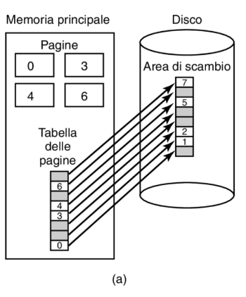 Abbiamo un rapporto 1:1 tra area di swap e effettiva posizione delle pagine in memoria principale.
- Ogni pagina ha la sua posizione e deve solo essere spostata nella sua Area di scambio
- Quando è necessario ricaricarla, il sistema operativo può ripristinarla direttamente dalla posizione specifica nello spazio di swap.
- occupa molta memoria
SCENARIO 2, Dinamico
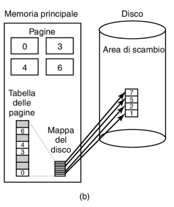 Utilizzo una mappa del disco che mi dice le varie posizioni nell’area di scambio
- più dinamica e leggera
- più difficile da implementare
LA SEGMENTAZIONE
SISTEMA DI MEMORIA MONODIMENSIONALE
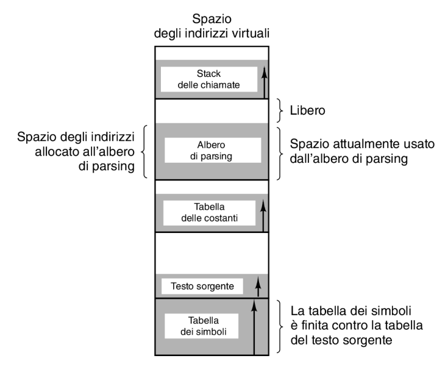
- La memoria è vista come un unico blocco lineare, un unico spazio contiguo di indirizzi.
- Ogni processo ha un solo segmento di memoria assegnato, che rappresenta tutto il suo spazio di esecuzione (codice, dati, stack, ecc.).
- Gli indirizzi sono gestiti come una sequenza univoca (monodimensionale).
potrei andare ad occupare altre aree di memoria virtuale con un programma
per risolvere creo dei segmenti, piu sequenze di indirizzi
SISTEMA DI MEMORIA A SEGMENTAZIONE
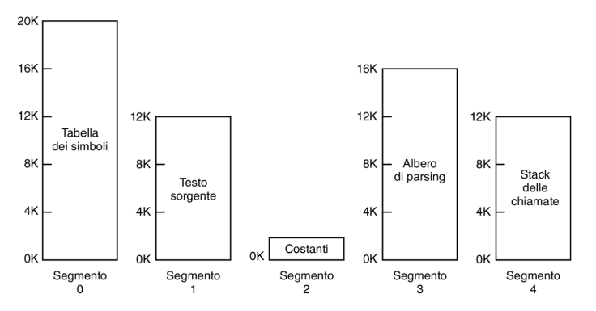
- L’idea del segmento consente ai processi di avere più sequenze di indirizzi per evitare collisioni
- Ogni segmento ha un suo spazio di indirizzi
- la loro dimensione è variabile
- per raggiungere un indirizzo di memoria si usa
- numero del segmento
- indirizzo nel segmento
- la segmentazione facilita la condivisione e la protezione delle risorse
Noi fino ad ora abbiamo visto la memoria paginata e univoca che differenza c’è con quella segmentata?
- la paginazione ha una dimensione prefissata(dovevamo calcolarla ecc)
- la segmentazione no, ha anche una logica
- puoi gestire l’accesso, quindi puoi mettere sola lettura sola scrittura ecc…
- puoi dargli un ruolo, tipo puoi dire che quel segmento sono codici oppure dati ecc
- offre maggiore flessibilità ma è più difficile da implementare
| Considerazione | Paginazione | Segmentazione |
|---|---|---|
| Il programmatore deve sapere che questa tecnica è in uso? | NO | SÌ |
| Quanti spazi di indirizzi lineari ci sono? | 1 | Molti |
| Lo spazio degli indirizzi totale può superare la dimensione della memoria fisica? | SÌ | SÌ |
| Le procedure e i dati possono essere distinti e protetti separatamente? | NO | SÌ |
| Le tabelle la cui dimensione varia possono essere disposte facilmente? | NO | SÌ |
| La condivisione delle procedure fra utenti è facilitata? | NO | SÌ |
| Perché fu inventata questa tecnica? | Per avere uno spazio degli indirizzi lineare grande senza dover acquistare ulteriore memoria fisica. | Per consentire a programmi e dati di essere spezzati in spazi degli indirizzi logicamente indipendenti e per facilitare la condivisione e la protezione. |
ESEMPIO
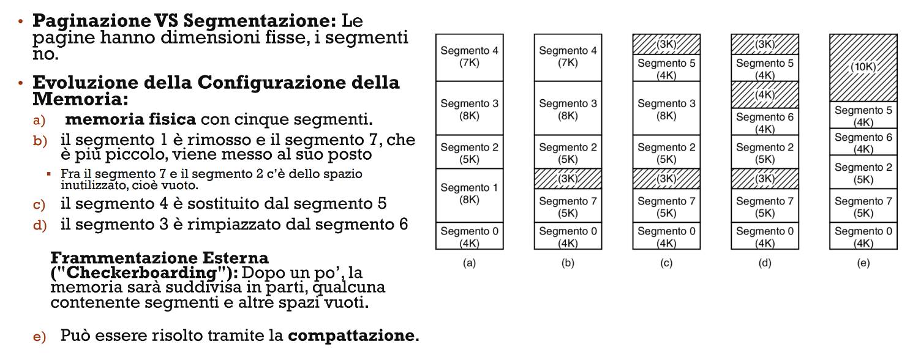
MULTICS AVEVA LA SEGMENTAZIONE
Gli indirizzi funzionano a 34 bit
- i segmenti venivano trattati come spazi di memoria virtuali indipendenti
- ogni programma poteva avere segmenti
- Ogni segmento punta alle loro tabelle delle pagine 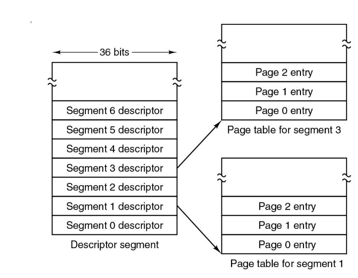
COME ERANO DIVISI I SEGMENTI
- c’è una tabella dei segmenti che ha i vari descrittori dei segmenti Come è fatto un descrittore del segmento? un descrittore ha bit
- Vero e proprio puntatore che punta alla tabella delle pagine(18 bit) che è suddiviso a sua volta cosi ha un offset da sommare e il numero delle pagine 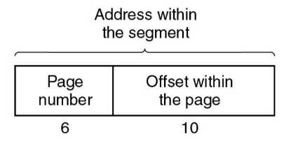
- la lunghezza di quel segmento
- un bit di protezione
- altre info 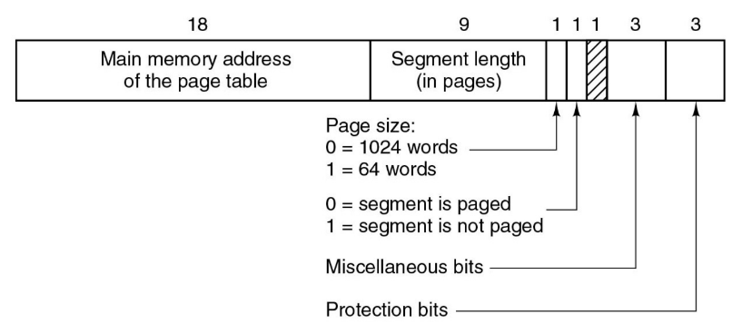
Conversione di un indirizzo
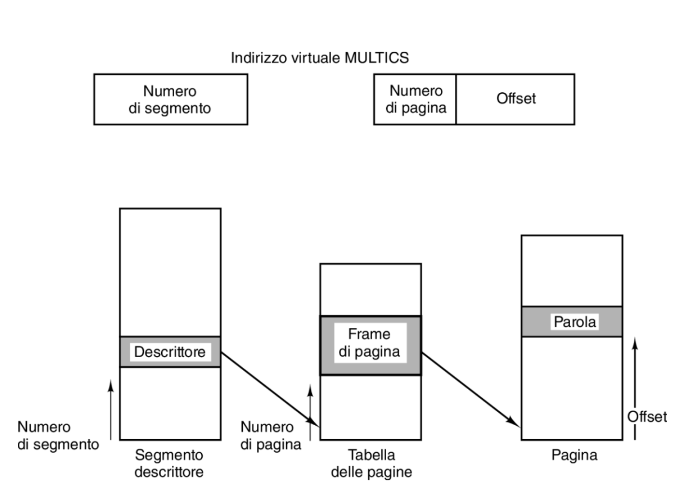
-
Trovare il descrittore del segmento
- Il numero del segmento viene utilizzato per individuare il descrittore del segmento nella memoria.
-
Verificare la tabella delle pagine
- Si controlla la presenza della tabella delle pagine relativa al segmento.
- Questo passaggio è fondamentale per prevenire eventuali errori.
-
Esaminare la voce della pagina virtuale
- Se la pagina non è in memoria: si verifica un page fault, e il sistema dovrà caricare la pagina dalla memoria secondaria.
- Se la pagina è in memoria: dalla voce della tabella delle pagine viene estratto l’indirizzo fisico della pagina nella memoria principale.
-
Calcolare l’indirizzo fisico
- L’indirizzo fisico nella memoria principale viene calcolato aggiungendo l’offset fornito all’indirizzo iniziale della pagina.
-
Accedere alla memoria
- Avviene l’operazione desiderata (lettura o scrittura) sulla posizione della memoria principale corrispondente.
Per ottimizzare le prestazioni si usava una TLB personalizzata
Addirittura già si utilizzava una TLB se pur piccola: 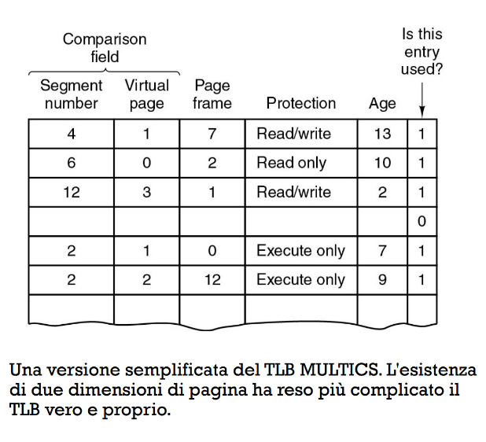
Comando free
con -h li vediamo convertiti in formati decenti ci porta a vedere le informazioni sulla memoria ram e sullo swap 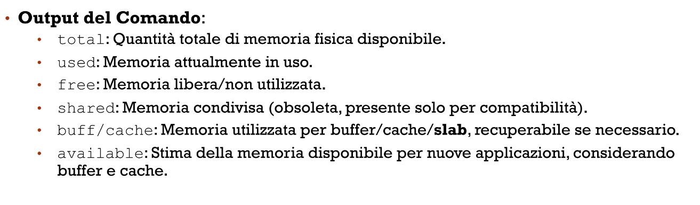 Noi lo usiamo con -h così vediamo le cose non in bit 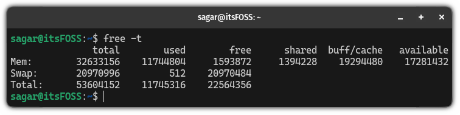